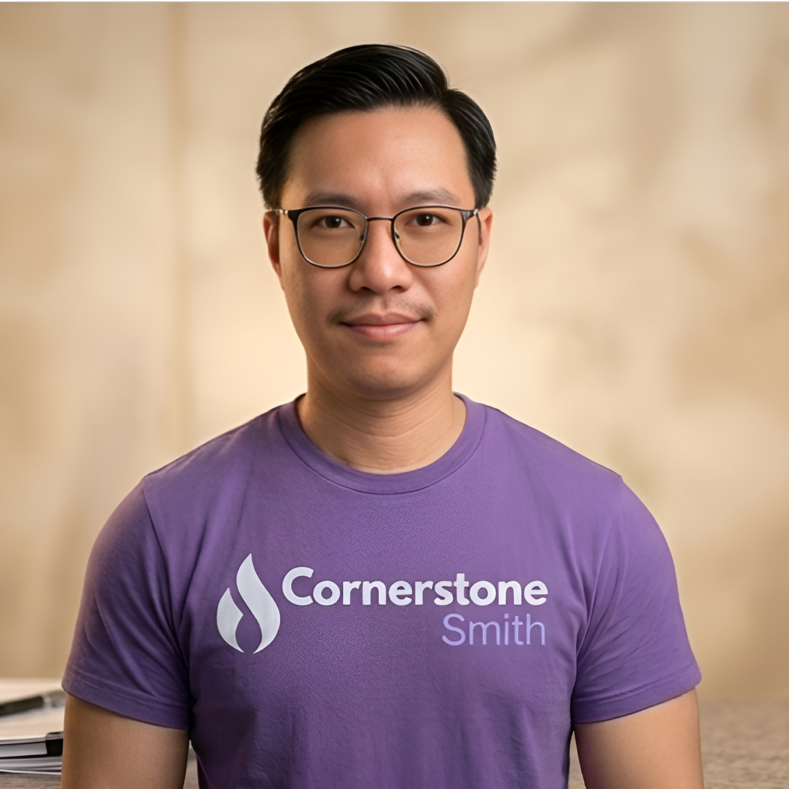
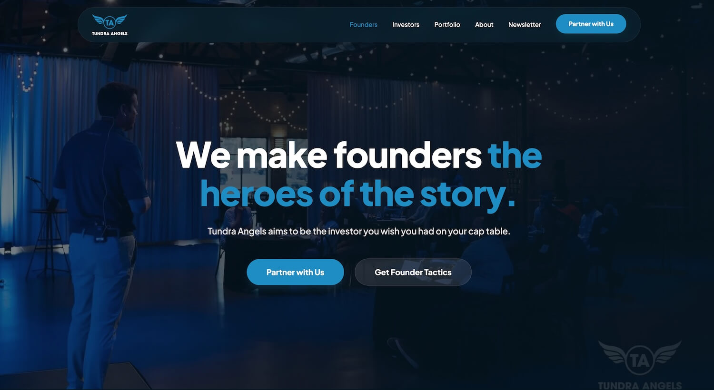
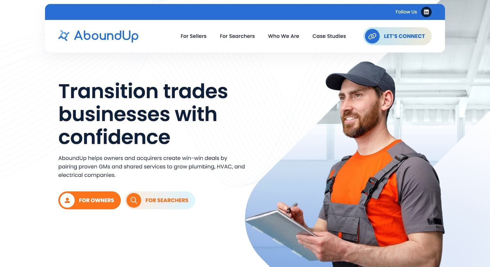
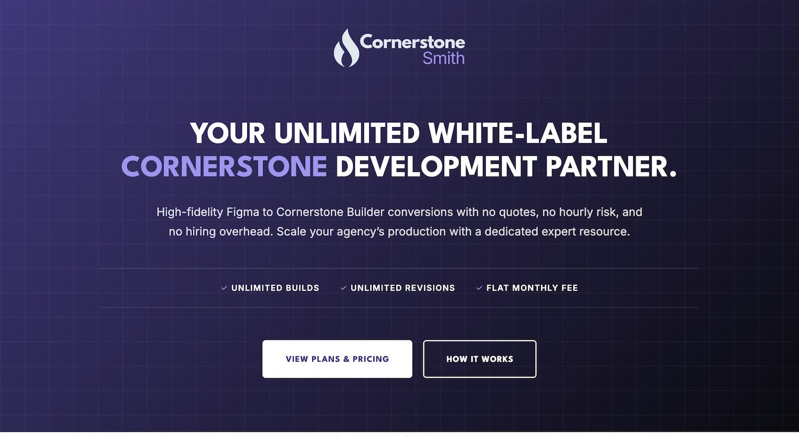
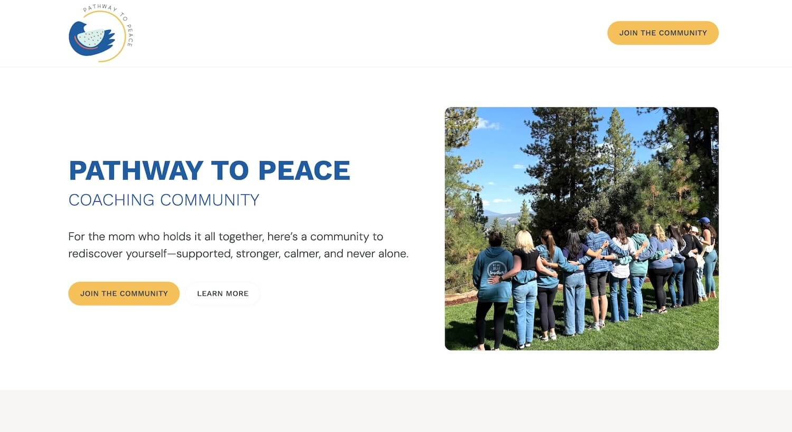

12+
Years Experience
Senior WordPress Developer & Full-Stack Problem Solver
Most agencies have a "WordPress person," but they still struggle with buggy launches, broken integrations, and sites that just don't look right. I close that gap. I am a full-stack developer who can design, program in PHP, and automate your workflows so your team can stop fighting with technology and start hitting deadlines.
How I help your agency:
Platform Expert:
As a former developer and project manager at Themeco (the makers of Pro and Cornerstone), I know WordPress from the inside out. I don't guess; I know how the code works.
True Full-Stack:
I handle everything from pixel-perfect Figma-to-WordPress conversions to complex MySQL database work and custom PHP.
Automation:
I use Make.com and Zapier to connect your websites to CRMs and marketing tools, removing the manual work that slows your team down.
UX Focus:
I build with the user in mind. A site shouldn't just look good—it needs to work perfectly for the client and their customers.
Featured Projects

Tundra Angels Website Redesign | Web Development Partner
The Problem: The client’s existing site was "plain" and failed to communicate the company’s value. This created a credibility gap during outreach; the founder had to explain his business from scratch because the site wasn't making a strong first impression.
The Work: I restructured the site architecture and handled the design phase first to ensure approval before development. I then built the final site in WordPress using the Pro Theme and Cornerstone for a high-performance, responsive experience.
The Result: The founder now confidently uses the site as a tool for outreach. Prospects arrive at meetings with their initial questions already answered by the site, allowing him to spend his time closing deals instead of providing basic introductions.

AboundUp Figma to Cornerstone | Full-Stack Development
The Problem: The "Handoff Gap"—where high-fidelity designs lose their premium feel during technical execution. AboundUp needed their ManyPixels Figma mockups translated into a production-ready site without losing the subtle spacing and typography that defined their new brand.
The Work: I performed a 1:1 technical implementation using a 100% native Pro/Cornerstone workflow. This included engineering a custom container system to solve the "Symmetry Trap," ensuring disparate partner logos appeared visually balanced and uniform across all devices.
The Result: I achieved 95%+ first-pass accuracy, delivering production-ready pages in just 1 to 2 days with zero technical debt. This speed allowed the agency to move from design approval to staging immediately, completely removing the traditional development bottleneck.

Cornerstone Smith | Personal Brand & Service Launch
The Project: I designed and developed this site to host my productized service, where I convert Figma mockups to WordPress pages for a flat monthly fee.
The Execution: I used a combination of AI-assisted design and manual development via the Cornerstone Page Builder. The site serves as a live demonstration of my ability to build clean, fast, and professional interfaces that solve specific business needs.

Kara Ryska Pathway to Peace | Landing Page Design & Development
The Goal: The client needed a high-converting landing page for a September 2025 launch of her coaching program for moms with special needs children.
The Work: Based on the client's copy, I designed the mockup for her approval and then handled the full development using the Cornerstone page builder. I ensured the page was fully responsive and ready for the launch deadline, providing a frictionless path for her students to enroll.
Employment History
AboundUp | Dev Manager
April 2021 – October 2025As the first employee of this Baltimore-based agency, I moved from project management to leading the entire development department. I worked directly with the founder to bridge the gap between business strategy and technical execution.
Technical Strategy
I worked hand-in-hand with my boss, Austin Abell, to evaluate and recommend the best technology stacks. For Top Speed Golf, I acted as a technical consultant to ensure their architecture could handle high-traffic demands.
Full-Stack Implementation
While I managed teams and created the SOPs that systematized our work, I remained a hands-on developer and designer, regularly handling high-fidelity design work and complex Cornerstone builds.
Complex Integrations
I specialized in solving problems standard page builders couldn't, including engineering custom search functionality via the Lodgify API and managing advanced automations through Make.com, Zapier, and SamCart.
Themeco | Developer & PM
January 2017 – February 2021Working for the company that created the X and Pro themes, I served as a technical authority for their custom development division.
Platform Mastery
Because I was part of the team that wrote the official documentation for the Pro theme, I have an "insider" mastery of the platform’s architecture, handling custom PHP development for a global client base.
Leadership & Support
I led developer teams and managed client interactions. During major version launches, I provided high-level technical support to ensure stability and performance for thousands of users worldwide.
Freelance WP Development
June 2015 – PresentOver the past decade, I have served as a recurring technical partner for agencies and high-level copywriters. I provide the technical reliability needed to launch complex projects without "hand-holding."
Platform Versatility
While WordPress is my "bread and butter," I have deep experience working across nearly every major builder, including Elementor, Divi, Wix, Squarespace, and GoDaddy.
Reliable Results
I specialize in clean builds for clients like Susan Greene Copywriter and Condo Hotel Center, focusing on site speed, data integrity, and creating a frictionless user experience.
Technical Skills
WP Architecture & Design
Primary MasteryThemes & Builders
- Pro & X Theme Specialist (Expert Level)
- Cornerstone Page Builder (Expert Level)
- Figma to WordPress (1:1 High-Fidelity)
- Elementor & WooCommerce Customization
Advanced Ecosystem
- ACF (Advanced Custom Fields)
- Loopers & Providers (Dynamic Data)
- Gravity Forms & OptinMonster
- MemberMouse & Member Architectures
Systems & Infrastructure
Automation & CRM
- Make.com (Integromat) & Zapier
- HubSpot Integration & Data Bridging
- API Integrations & Custom Webhooks
- Automated Data Mapping
Infrastructure & Performance
- Kinsta & Cloudways Management
- WP Rocket & WPMUDev Suite
- Technical Troubleshooting & Migrations
- Staging & Server Configurations
Core Stack
AI Efficiency
- Gemini / ChatGPT / Copilot: Prompt engineering for 3x dev speed.
- AI Design: UXPilot & AI-driven prototyping.
Revenue Tech
- CheckoutChamp & SamCart
- Mailchimp & ActiveCampaign
- BeePro Template Development
- Webflow • Beehiiv • Wix • Squarespace
Work With Me
Choose the engagement model that fits your agency's scale.
Unlimited Figma to Cornerstone
The ultimate white-label solution for design agencies. Send your Figma mockups and get pixel-perfect, native Cornerstone builds back—reliably, at scale, and for a fixed monthly rate.
- ✓ 100% Native Architecture
- ✓ Zero Technical Debt
- ✓ White-Label Ghost Delivery
Senior Developer & Partner
The "Head of Development" solution. Tap into my full 10-year mastery—from custom PHP and server infrastructure to complex automations and team leadership. This is for agencies that need a technical partner, not just a builder.
- ✓ Head of WordPress Strategy
- ✓ Complex API & System Logic
- ✓ Total Platform Infrastructure
Direct Access • No Agency Middlemen • 10+ Years Experience